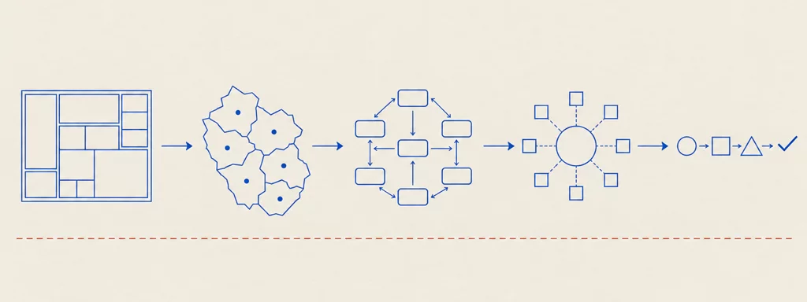
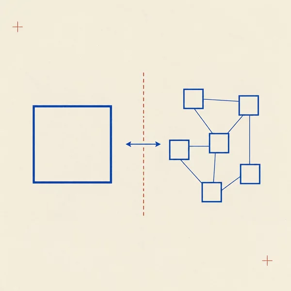
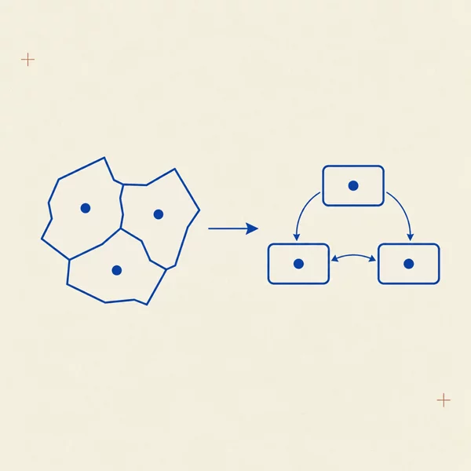
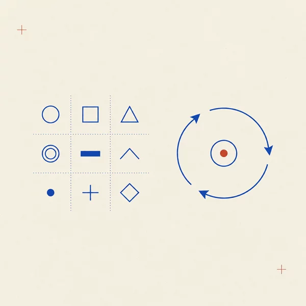
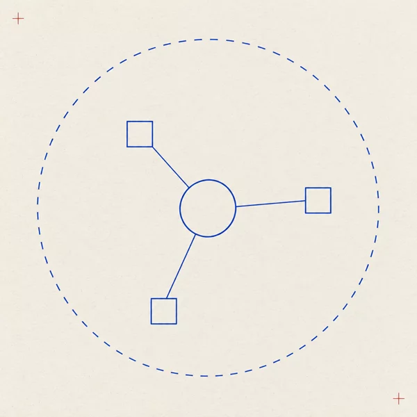
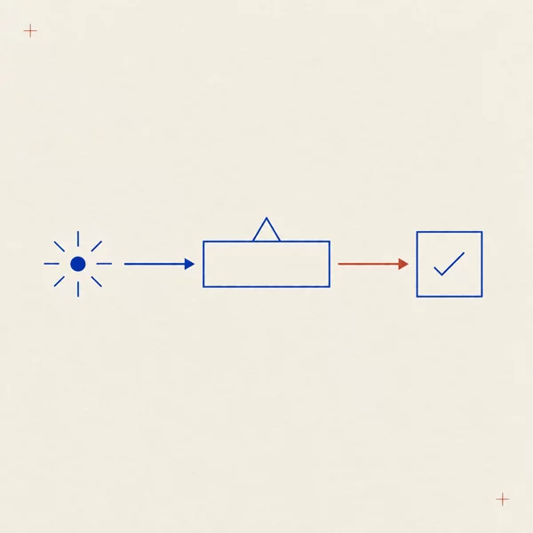

data-src attribute naming the exact official slide deck it derives from; every footer lists the sources. The chapters are reconstructions of the official course material (decks, lab notes and cited papers), not redistributions of it.




The course corpus on Virtuale contains 34 files. Of these, 28 are taught sources rebuilt into the 18 chapters above (the module decks, the six lab-note decks, and the cited research papers / textbook chapters), and the Intro deck (Slides Folder - Intro) is used for this index’s course overview only. The remaining 5 files — cloud, ISO-standard and textbook material — are listed here honestly as a supplementary reference library: they are present in the official course materials, but they are not taught chapter sources and are deliberately not rebuilt as chapters:
Slides Folder - multi-tenant-cloud-architectures — cloud-architecture slides (multi-tenancy);Materials Folder - BS ISO-IEC 22123-1-2023 — ISO/IEC 22123-1:2023, cloud computing vocabulary;Materials Folder - BS ISO-IEC 22123-2-2023 — ISO/IEC 22123-2:2023, cloud computing concepts;Materials Folder - BS ISO-IEC 19086-1-2016 — ISO/IEC 19086-1:2016, cloud service level agreement framework;Materials Folder - Dan C. Marinescu - Cloud Computing_ Theory and Practice-Morgan Kaufmann (2022) — the cloud computing textbook.The course’s reference textbooks listed in the Intro deck (Bass et al., Richardson & Ford, Taylor et al., Clements et al., Martin, Newman, Richardson, Fowler) remain the reading list of the course; two of them are also used as section sources inside the chapters (Materials Folder - Software-Fundamentals of Software Architecture in chapter 3, and the “Microservices Patterns” book behind the four lab notes).